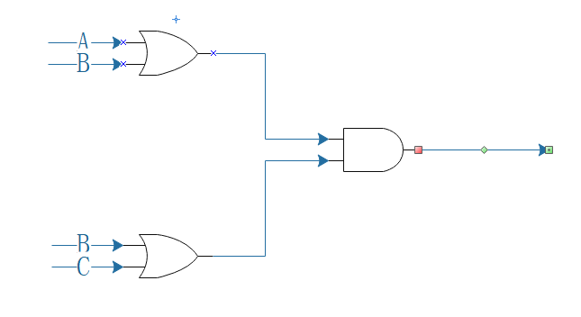
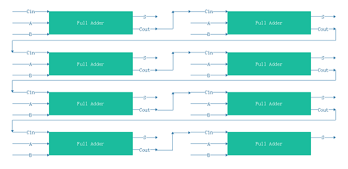
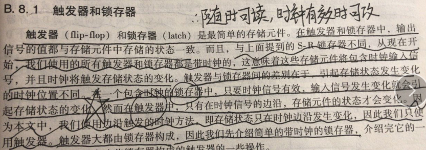
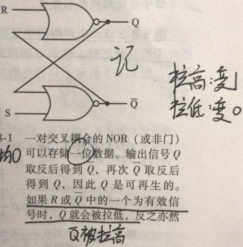

1)What does AND mean?
If Ai == 1, meanwhile Bi == 1, then Ai & Bi = 1.
- 111 & 000 = 000
- 101 & 111 = 101
- 011 & 011 = 011
2)What does XOR mean?
If Ai != Bi, then Ai XOR Bi = 1.
- 111 XOR 000 = 111
- 101 XOR 111 = 010
- 011 XOR 011 = 000
3)Draw a circuit diagram corresponding to the following Boolean expression: (A + B)(B + C)
4)Show the behavior of the following circuit with a truth table:
| A | B | Result |
|---|---|---|
| 0 | 0 | 1 |
| 0 | 1 | 1 |
| 1 | 0 | 0 |
| 1 | 1 | 1 |
5)What is circuit equivalence? Use truth table to prove the following formula.
| A | B | Left | Right |
|---|---|---|---|
| 0 | 0 | 1 | 1 |
| 0 | 1 | 1 | 1 |
| 1 | 0 | 1 | 1 |
| 1 | 1 | 0 | 0 |
6)There are eight 1bit full adder integrated circuits. Combine them to 8bit adder circuit using the following box diagram.
7)
- (X8X7X6X51111)2
- (X8X7X6X5X'4X'3X'2X'1)2
- (X8X7X6X5X'4X'3X'2X'1)2
Explaination
Logic gate
In electronics, a logic gate is an idealized or physical device implementing a Boolean function; that is, it performs a logical operation on one or more binary inputs and produces a single binary output.
Boolean algebra
In mathematics and mathematical logic, Boolean algebra is the branch of algebra in which the values of the variables are the truth values true and false, usually denoted 1 and 0 respectively.
Flip-flop
1)Flip-flop 中文翻译是?
2)How many bits information does a SR latch store?
